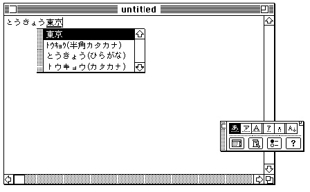

Handling Text Service Apple Events
Text service components send information to your client application through Apple events. To communicate with an input method text service component, you need to implement Apple event handlers thatEach Apple event contains two required parameters:
- receive raw, converted, or confirmed text from the input method, update the active input area, and highlight text appropriately
- convert screen location (in global coordinates) to text offset (in the active input area or in the application's text buffer), so that the input method can, for example, adjust the caret position or cursor display to reflect the text beneath the cursor
- convert text offset to screen location, so that the input method can, for example, place a list of conversion options next to a particular section of raw text
- respond to the input method's request to show or hide a floating input window
Other parameters are specific to each Apple event, and are described under "Apple Event Handlers Supplied by Client Applications" on page 7-65.
- The
keyAETSMDocumentRefconparameter is filled in by the Text Services Manager. It tells the application which TSM document is affected by the Apple event.- The
keyAEServerInstanceparameter is filled in by the text service component, and identifies the component that is sending the Apple event.For general rules for writing Apple event handlers, see the discussion of the Apple Event Manager in Inside Macintosh: Interapplication Communication.
Receiving Text and Updating the Active Input Area
The text service component uses the Update Active Input Area Apple event to request that your client application create and update an active input area, including drawing text in the active input area, and accepting confirmed text. For details on active input areas, see "Inline Input" on page 7-11. This Apple event also asks the client application to update a range of text in the active input area and highlight appropriately.Because your application is responsible for all drawing in the active input area, it receives an Update Active Input Area Apple event whenever the user enters raw text (for example, Romaji for Japanese input), whenever that raw text is converted to an intermediate form (for example, Hiragana), whenever the text is converted (for example, to Kanji), and whenever the converted text is confirmed. The input method also uses this Apple event to instruct your application in how to highlight the various types of text (raw, converted, and so on) within the active input area.
The input method uses the Update Active Input Area Apple event to send additional information to your application, such as current caret position, a range of text that should be scrolled into view if it is not visible, and boundaries of clauses (language-specific groupings of text) that may exist in the active input area.
Listing 7-7 shows a sample handler for the Update Active Input Area Apple event.
The handler first receives the input parameters, including the text and the ranges of
text to highlight and update. The handler then puts any confirmed text into the application's text buffer.Listing 7-7 A sample handler for the Update Active Input Area Apple event
FUNCTION MyHandleUpdateActive(theAppleEvent: AppleEvent; reply: AppleEvent; handlerRefCon: LongInt): OSErr; VAR theHiliteDesc: AEDesc; theUpdateDesc: AEDesc; theTextDesc: AEDesc; myErr: OSErr; returnedType: DescType; script: ScriptLanguageRecord; fixLength: LongInt; refcon: LongInt; textSize: LongInt; actualSize: LongInt; thePinRange: TextRange; BEGIN {Get the required parameter keyAETSMDocumentRefcon} myErr := AEGetParamPtr(theAppleEvent, keyAETSMDocumentRefcon, typeLongInteger, returnedType, @refcon, sizeof(refcon), actualSize); IF myErr = noErr THEN BEGIN {Get the required parameter keyAETheData} theTextDesc.dataHandle := NIL; myErr := AEGetParamDesc(theAppleEvent, keyAETheData, typeChar, theTextDesc); END; IF myErr <> noErr THEN BEGIN MyHandleUpdateActive := myErr; Exit(MyHandleUpdateActive); END; {Get the required parameter keyAEScriptTag} myErr := AEGetParamPtr(theAppleEvent, keyAEScriptTag, typeIntlWritingCode, returnedType, @script, sizeof(script), actualSize); IF myErr = noErr THEN {Get the required parameter keyAEFixLength} myErr := AEGetParamPtr(theAppleEvent, keyAEFixLength, typeLongInteger, returnedType, @fixLength, sizeof(fixlength), actualSize); IF myErr = noErr THEN BEGIN {Get the optional parameter keyAEHiliteRange} theHiliteDesc.dataHandle := NIL; myErr := AEGetParamDesc(theAppleEvent, keyAEHiliteRange, typeTextRangeArray, theHiliteDesc); END; IF myErr <> noErr THEN BEGIN MyHandleUpdateActive := myErr; myErr := AEDisposeDesc(theTextDesc); {ignore the error} Exit(MyHandleUpdateActive); END; {Get the optional parameter keyAEUpdateRange} theUpdateDesc.dataHandle := NIL; myErr := AEGetParamDesc(theAppleEvent, keyAEUpdateRange, typeTextRangeArray, theUpdateDesc); IF myErr <> noErr THEN BEGIN MyHandleUpdateActive := myErr; myErr := AEDisposeDesc(theTextDesc); {ignore the error} myErr := AEDisposeDesc(theHiliteDesc); Exit(MyHandleUpdateActive); END; {Get the optional parameter keyAEPinRange} myErr := AEGetParamPtr(theAppleEvent, keyAEPinRange, typeTextRange, returnedType, @thePinRange, sizeof(thePinRange), actualSize); MyHandleUpdateActive := myErr; IF myErr = noErr THEN BEGIN textSize := GetHandleSize(theTextDesc.dataHandle); MyHandleUpdateActive := MemError; IF MemError = noErr THEN BEGIN {if the value of keyAEFixLength is -1, the text } { contained in the keyAETheData parameter should } { completely replace the active input area in } { the application window} IF fixLength = -1 THEN fixLength := textSize; {the application procedure SetNewText handles } { updating and confirming the text in the active } { input area, highlighting, and scrolling the } { specified offsets into view} SetNewText(refcon, script, theTextDesc.dataHandle, textSize, fixLength, TextRangeArrayHandle(theUpdateDesc.dataHandle), TextRangeArrayHandle(theHiliteDesc.dataHandle) ); END; END; myErr := AEDisposeDesc(theTextDesc); {ignore the errors} myErr := AEDisposeDesc(theHiliteDesc); myErr := AEDisposeDesc(theUpdateDesc); END;Converting Screen Position to Text Offset
An input method text service component uses the Position To Offset Apple event when it needs to know the byte offset in a text buffer (usually the buffer corresponding to the active input area) corresponding to a given screen position. An input method typically sends the Position To Offset Apple event to your application in response to a mouse-down event. If the event location is in the application window (including the active input area), the input method may want to know which character the event corresponds to, in order to locate the caret or define highlighting.An input method may also send Position To Offset in response to
SetTSMCursor, so that it can modify the appearance of the cursor depending on the type of text the cursor passes over.Your application's handler returns a byte offset and a value indicating whether the screen position is within the active input area. If it is, the offset is measured from the start of the active input area (the leading edge of the first character on the first line). If it is not, the offset is measured from the beginning of the application's body text. The definition of body text and the significance of measurements within it are specific to your application; here it means any application text outside of the active input area.
To help the input method more specifically define individual characters, your application can optionally return an indication as to whether the position corresponds to the leading edge or the trailing edge of the glyph corresponding to the character at the indicated offset.
The Position To Offset Apple event is similar in function to the QuickDraw
PixelToCharfunction, and returns similar results. Your handler may usePixelToCharto get the information it returns to the text service component, or it may use a TextEdit call, as shown in the following code sample.Listing 7-8 shows a sample handler for the Position To Offset Apple event. The handler first receives the input parameters, then uses the TextEdit function
TEGetOffsetto convert a screen location to text offset. TheTEGetOffsetfunction is described in the chapter "TextEdit" in this book.Listing 7-8 A sample handler for the Position To Offset Apple event
FUNCTION MyHandlePos2Offset(theAppleEvent: AppleEvent; reply: AppleEvent; handlerRefCon: LongInt): OSErr; VAR myErr: OSErr; returnedType: DescType; refcon: LongInt; currentPoint: Point; clickWindow: WindowPtr; where, part: Integer; oldPort: GrafPtr; offset: LongInt; te: TEHandle; actualSize: LongInt; bodyRect: Rect; dragging: Boolean; isMatch: Boolean; BEGIN {Get the required parameter TSMDocumentRefcon} myErr := AEGetParamPtr (theAppleEvent, keyAETSMDocumentRefcon, typeLongInteger, returnedType, @refcon, sizeof(refcon), actualSize); IF myErr = noErr THEN {Get the required parameter keyAECurrentPoint} myErr := AEGetParamPtr (theAppleEvent, keyAECurrentPoint, typeQDPoint, returnedType, @currentPoint, sizeof(currentPoint), actualSize); IF myErr <> noErr THEN BEGIN MyHandlePos2Offset := myErr; Exit(MyHandlePos2Offset); END; where := kTSMOutsideOfBody; part := FindWindow(currentPoint, clickWindow); {the application function IsWindowForTheAE returns TRUE} {if the refcon is associated with the window} isMatch := IsWindowForTheAE(refcon, clickWindow); IF ((clickWindow = FrontWindow) AND isMatch AND (part = inContent)) THEN BEGIN GetPort(oldPort); SetPort(clickWindow); {convert currentPoint into the local } { coordinates of the current grafport} GlobalToLocal(currentPoint); {the application function GetTheBodyRect returns the} {body rect of the window} bodyRect := GetTheBodyRect(clickWindow); IF PtInRect(currentPoint, bodyRect) THEN BEGIN where := kTSMInsideOfBody; {the application function FindTheTEHandle returns the } { window's TEHandle. Then the TextEdit function } { TEGetOffset returns the offset corresponding to the point} te := FindTheTEHandle (clickWindow); offset := TEGetOffset(currentPoint, te); {The application function IsInsideInputArea returns } { TRUE if offset is within the active input area. } { It is application's responsibility to remember } { the range of the input area.} IF IsInsideInputArea(offset, clickWindow) THEN where := kTSMInsideOfActiveInputArea; END; {get the optional parameter: keyAEDragging} dragging := FALSE; myErr := AEGetParamPtr (theAppleEvent, keyAEDragging, typeBoolean, returnedType, @dragging, sizeof(dragging), actualSize); END; IF myErr <> noErr THEN BEGIN MyHandlePos2Offset := myErr; Exit(MyHandlePos2Offset); END; {if the parameter keyAEdragging is TRUE and the mouse} { position is outside the body text, the application } { can scroll the text within the active input area, } { rather than returning kTSMOutsideOfBody. The application } { procedure HandleScroll is handling the scrolling.} IF (dragging = TRUE) AND (where = kTSMOutsideOfBody) THEN BEGIN HandleScroll(te, offset); where := kTSMInsideOfActiveInputArea; END; SetPort(oldPort); {Construct the return parameter keyAEOffset} myErr := AEPutParamPtr(reply, keyAEOffset, typeLongInteger, @offset, sizeof(offset)); IF myErr = noErr THEN {Construct the return parameter keyAERegionClass} MyHandlePos2Offset := AEPutParamPtr(reply, keyAERegionClass, typeShortInteger, @where, sizeof(where)) ELSE MyHandlePos2Offset := myErr; END;Converting Text Offset to Screen Position
An input method text service component uses the Offset To Position Apple event when it needs to know the screen position corresponding to a given byte offset in the text buffer for the active input area. An input method typically sends the Offset To Position Apple event to your application when it needs to draw something in a specific spatial relationship with a given character in the active input area. For example, it may need to draw a floating window containing suggested conversion options beside a particular range of raw or converted text. See Figure 7-9.The text service component supplies a byte offset, measured from the character at the start of the active input area. The application returns a point designating the global coordinates of the caret position corresponding to that offset. Your application may optionally return information about the font, size, and other measurements of the text in the active input area, so that the text service component can more precisely locate the elements it is to draw.
Figure 7-9 Drawing a window with conversion options next to the active input area

The Offset To Position Apple event is similar in function to the QuickDrawCharToPixelfunction, and it returns similar results. Your handler may useCharToPixelto get the information it returns to the text service component, or it may use a TextEdit call, as shown in the following code sample.Listing 7-9 shows a sample handler for the Offset To Position Apple event. The handler first receives the input parameters, then uses the TextEdit function
TEGetPointto convert a text offset to a screen location. TheTEGetPointfunction is described in the chapter "TextEdit" in this book.Listing 7-9 A sample handler for the Offset To Position Apple event
FUNCTION MyHandleOffset2Pos(theAppleEvent: AppleEvent; reply: AppleEvent; handlerRefCon: LongInt): OSErr; VAR myErr: OSErr; rtErr: OSErr; returnedType: DescType; offSet: LongInt; refcon: LongInt; actualSize: LongInt; theWindow: WindowPtr; te: TEHandle; oldPort: GrafPtr; thePoint: Point; theFixed: Fixed; BEGIN {Get the required parameter keyAEOffset} myErr := AEGetParamPtr(theAppleEvent, keyAEOffset, typeLongInteger, returnedType, @offSet, sizeof(offSet), actualSize); IF myErr = noErr THEN {Get the required parameter TSMDocumentRefcon} myErr := AEGetParamPtr(theAppleEvent, keyAETSMDocumentRefcon, typeLongInteger, returnedType, @refcon, sizeof(refcon), actualSize); IF myErr <> noErr THEN BEGIN MyHandleOffset2Pos := myErr; Exit(MyHandleOffset2Pos); END; {the application function GetWindowFromRefcon returns the } { window which is associated with the refcon} rtErr := noErr; {initialize rtErr} theWindow := GetWindowFromRefcon(refcon); IF theWindow = NIL THEN rtErr := errOffsetInvalid ELSE BEGIN {the application function FindTheTEHandle returns the } { TEHandle for the window} te := FindTheTEHandle(theWindow); {the TextEdit function TEGetPoint returns the point } { corresponding to the given offset} thePoint := TEGetPoint(offSet, te); IF (offSet > te^^.teLength) OR (offSet < 0) THEN rtErr := errOffsetInvalid ELSE IF(PtInRect(thePoint,theWindow^.portRect) = FALSE) THEN rtErr := errOffsetIsOutsideOfView ELSE BEGIN GetPort(oldPort); SetPort(theWindow); {Convert thePoint into global coordinates} LocalToGlobal(thePoint); SetPort(oldPort); END; {construct the return parameter keyAEPoint} myErr := AEPutParamPtr(reply, keyAEPoint, typeQDPoint, @thePoint, sizeof(thePoint)); IF myErr = noErr THEN {construct the optional return parameter keyAETextFont} myErr := AEPutParamPtr(reply, keyAETextFont, typeLongInteger, @te^^.txFont, sizeof(longInt)); IF myErr = noErr THEN BEGIN {construct optional return parameter keyAETextPointSize} theFixed := BSL(Fixed(te^^.txSize), 16); myErr := AEPutParamPtr(reply, keyAETextPointSize, typeFixed, @theFixed, sizeof(theFixed)); END; IF myErr = noErr THEN {construct optional return parameter keyAETextLineHeight} myErr := AEPutParamPtr(reply, keyAETextLineHeight, typeShortInteger, @te^^.lineHeight, sizeof(Integer)); IF myErr = noErr THEN {construct optional return parameter keyAETextLineAscent} myErr := AEPutParamPtr(reply, keyAETextLineAscent, typeShortInteger, @te^^.fontAscent, sizeof(Integer)); IF myErr = noErr THEN BEGIN {construct the optional return parameter keyAEAngle-- } {90 = horizontal direction, 180 = vertical direction} theFixed := Fixed(90); myErr := AEPutParamPtr(reply, keyAETextPointSize, typeFixed, @theFixed, sizeof(Fixed)); END; IF myErr <> noErr THEN BEGIN MyHandleOffset2Pos := myErr; Exit(MyHandleOffset2Pos); END; END; {Construct the return parameter keyErrorNumber} MyHandleOffset2Pos := AEPutParamPtr(reply, keyErrorNumber, typeShortInteger, @rtErr, sizeof(rtErr)); END;Showing or Hiding the Input Window
Input methods that work with a floating input window often offer options to the user for either (1) continually displaying the input window, (2) displaying it only as text is being typed in and hiding it immediately after the user confirms it, or (3) leaving the window up for a specified amount of time after confirmation. The Show/Hide Input Window Apple event requests that your client application make the bottomline floating input window either visible or not visible. An input method text service component sends this Apple event whenever it needs to know or change the current state of the window.This Apple event is for use only by applications that display their own input windows. If your application does not itself control the display of a floating input window, you can ignore this Apple event. If your application uses the Text Services Manager floating window service for bottomline input (by calling
UseInputWindow), you do not receive this Apple event because it is handled by the Text Sevices Manager.